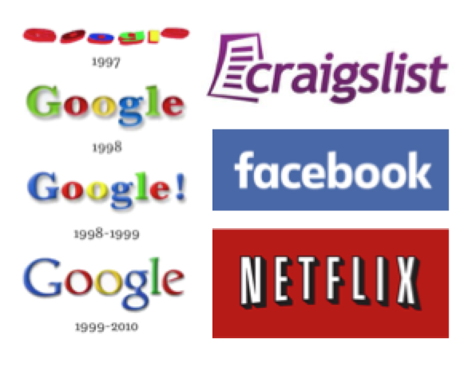

class: center, middle # The Web World from 1996-2000 <img src="what.jpg" height: "500px", width="500px"> <br> <br> By Suha Park, Sydney Toth, Jordan Fowler --- # 1996 --- # 1997 Part 1  <span style="float: right">popular domains appear online</span> <span style="float: right">increase in domains = need for GoDaddy</span> <span style="float: right">all 3 letter domains are taken</span> --- # 1997 Part 2 <iframe width="200px" height="150" src="https://www.youtube.com/embed/-5x5OXfe9KY" frameborder="0" allowfullscreen></iframe> <span style="float: right"><em>Dancing (CGI) Baby/"Baby Cha-Cha</em>: First Internet Meme</span> <iframe width="300px" height="190" src="https://www.youtube.com/embed/A81IwlDeV6c" frameborder="0" allowfullscreen></iframe> <span style="float: right"><em>The Kids' Guide to the Internet</em> 4:10-4:30</span> --- # 1998 1. --- # 1999 1. --- # Work Cited